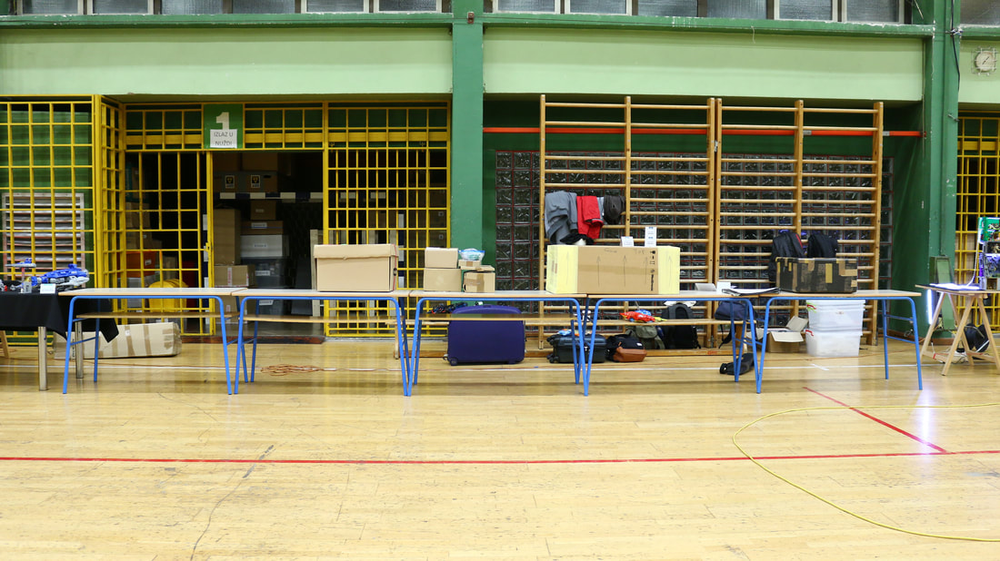
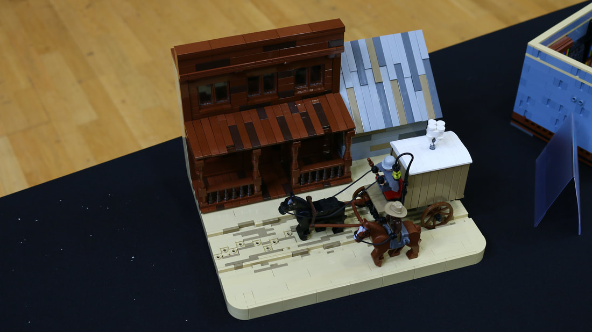
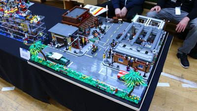
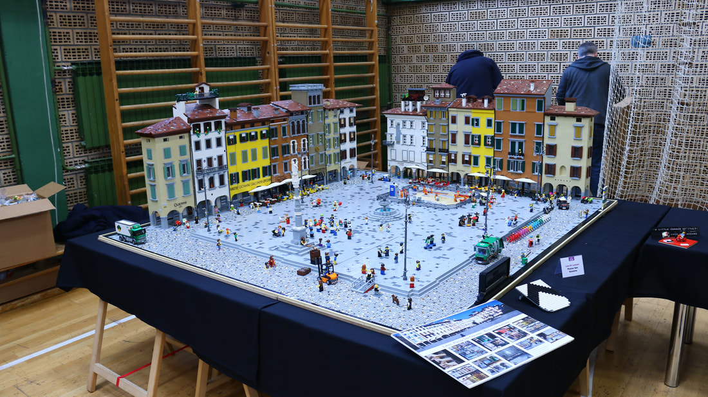
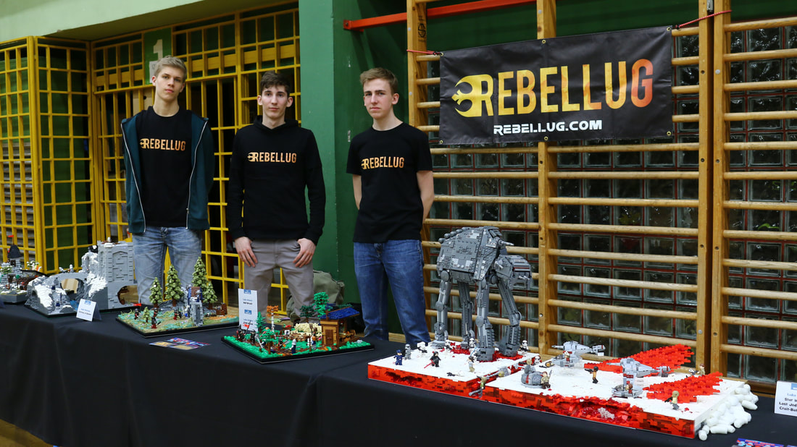

Kockice Con 2018 Recap
This week was Kockice Con 2018 in Zagreb, Croatia.
4/1/18
It was a quiet morning at my residence in Munich, Germany when I was awoken by the sound of an alarm clock. It was 7:10 a.m. by the time Tristan (TrisBrick) and myself were waiting for our bus at the main bus terminal. The destination was Kockice Con 2018, located in Zagreb, Croatia. A few months earlier, I was contacted by one of my superiors within the LUG, Luke (FirstOrderLego), who pitched me the idea of the three of us going to the event to display a large array of MOCs. Tristan and I, of course, agreed to come.
We arrived at the main bus terminal in Zagreb at around 3:15 p.m. after a long 8 hour drive. We were met by Sven, one of the event organizers, who had offered to pick us up. After getting to the convention location, we met up with Luke, who arrived soon after with someone from his Croatian LUG. It was great to see another familiar face in a country I had never been in. A few hours later, we finished setting up our fleet of MOCs that had come with us on the long journey. Our MOCs attracted some attention and gave us the opportunity to meet new AFOL friends. After opening ceremonies were over and dinner was eaten, all the attendees boarded a bus that took us to our hotel accommodations.
The next day, Luke and myself left early after breakfast to get the rest of our display set up (such as cards, the RL banner, etc). We had many builds, such as a few of my smaller vignettes, several "Kingdoms at War" builds, Tristan's Venice scene and Luke's Battle of Crait diorama. Around our display we had builds done by the Klub Kockice, such as a large spaceship/battleship complete with lights, its own army of black space police style minifigures and a color modified Kylo Ren's Command Ship as their own commander’s ship. Other creations displayed included the large World War 2 dioramas from the Italian Lego Users Group, which featured many techniques I had not seen before.
Some of my personal favorite builds (other than the two I mentioned from Luke and Tristan) were an old style American street (done by Sanel Luković), an Italian square recreated part for part (from Luca Di Lazzaro) and a scene out of Django Unchained (by Andraž Drčar). I was fortunate enough to have insightful conversations with all three builders about where they get their inspiration for such large builds
The next day, Luke and myself left early after breakfast to get the rest of our display set up (such as cards, the RL banner, etc). We had many builds, such as a few of my smaller vignettes, several "Kingdoms at War" builds, Tristan's Venice scene and Luke's Battle of Crait diorama. Around our display we had builds done by the Klub Kockice, such as a large spaceship/battleship complete with lights, its own army of black space police style minifigures and a color modified Kylo Ren's Command Ship as their own commander’s ship. Other creations displayed included the large World War 2 dioramas from the Italian Lego Users Group, which featured many techniques I had not seen before.
The following final day started out with talking over breakfast about what we could expect from the certified LEGO Store we were going to visit along with some other AFOLs. Once there, I made sure to capture it in a series of clips I plan on uploading in the following weeks. The store was smaller than usual LEGO Stores, but it had most of the aspects one would expect from a regular LEGO store. For example, it had a Pick A Brick wall, but it was smaller than usual. Prices were decent, although the larger sets were overpriced due to the exchange rate of around 20% in some cases.
It was great to hang out with my fellow RebelLUG friends over the duration of the convention. Luke was an excellent tour guide and translator for the convention, and it was nice to sit down and chat about life and Lego. We had some laughs, some cries and that’s what made it such a great experience.